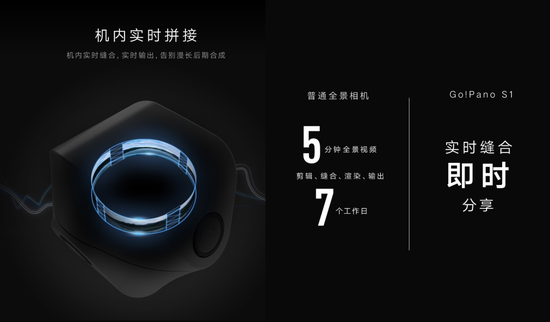
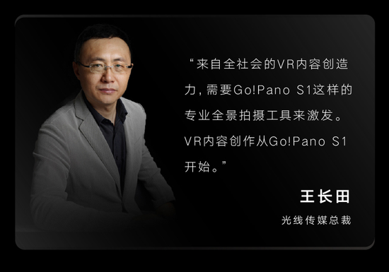
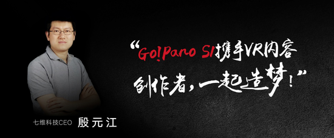
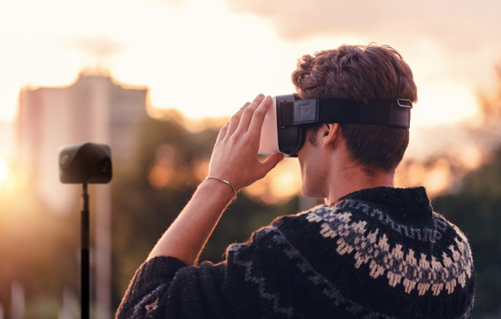

11月21日，七维科技vipano S1专业四目全景相机登陆众筹，以超低于成本价的价位推出标准版4999元和专业直播版9999元两个版本，引爆VR内容创作热情。
与市面上常见的全景相机相比，vipano S1将VR内容创作变成一件快速、简单、便捷的事情，随时随地、触手可及，而且单镜头画面品质可达到4K。与市面上常见的6目拼接相机组合相比，vipano S1标准版众筹价格4999元几乎是同品质全景相机价格的四分之一；而专业直播版则在标准版套件基础上，增加Stitch Box直播PC、120G SSD固态硬盘、三脚架、随身箱，这个版本的众筹价也相当优惠，只需要9999元。
这款可支持4K拍摄、机内缝合、全景直播/录播、全景声、以及APP一键直播、一键分享的便携全景相机，可以说是史上最高性价比的全景相机。
vipano S1欲打破行业冰封期 激发全社会的VR创造力。
光线传媒总裁王长田这样评价vipano S1：“来自全社会的VR内容创造力，需要vipano S1这样的专业全景拍摄工具来激发，VR内容创作从vipano S1开始。”
据艾媒咨询数据显示，47.4%的受访用户认为对VR头显的使用频率，取决于其内容的丰富度。而在内容方面，目前国内市场仍处在探索期，围绕娱乐、游戏、体育等IP资源展开的居多，但尚未达到真正百花争放的局面。
而vipano S1全景相机在首次公开亮相时即面向VR内容创作团队，旨在用轻便且专业的相机聚拢社会上所有VR内容创作PGC团队，推动专业摄影师、影音娱乐爱好者、数码产品爱好者、户外活动爱好者、记者、主播等人群向第五媒介VR转型，激发全社会的VR创造力，改善当下VR内容稀缺、质量层次不齐的局面，与硬件厂商共同推动VR行业发展。
对于此次vipano S1以超低于成本价的价位登陆京东众筹，七维科技CEO殷元江表示：“我们选择在VR渐冷的时候推出vipano S1这款专业入门级的VR内容创作工具，一是想打破行业的冰封期让行业尽快回暖；二是加速VR与新闻、旅游、直播、演艺、教育等各个行业的融合；三是为VR内容创作者提供一个专业、便携、简单的工具；四是通过激发VR创造力，为用户带来更多优质的VR内容体验”。
VR+新闻，随时随地还原新闻临场感
从报纸、广播一直到如今的电视、互联网，科技让人们获知信息的渠道越来越丰富，人们对信息的感知也从最初的读、听观看、到多种交互方式，逐级进行递增。观众对新闻提出了更高的要求，他们想要有亲临现场的感觉，于是把观众带到新闻现场“让观众看见”就成了新闻的目标之一，同时也是难点之一。
VR让新闻行业从业者看到了将观众带入新闻现场的机会，其特有的沉浸感让观众能够实现感知新闻，而交互性及丰富的想象空间也重塑了媒体的表达和外延，技术的不断迭代给媒体的内容与呈现提供了全新的方向。VR成为一种全新的新闻媒介。纽约时报、BBC、ABC、美联社、央视、新华社、财新、法晚及各大门户网站等国内外媒体也在积极探索VR新闻，但笨重的设备并不适合灾难、突发事件、复杂地形等场景使用，价格昂贵、专业人才、制作周期长使VR新闻制作呈现高门槛的状态，而市面上已有的消费级又不能满足VR新闻专业性的要求。
vipano S1的出现，使随时随地的VR新闻直播成为可能，满足新闻的时效性，让VR新闻变得更轻、更快。
VR+旅游 更“全面”的游客体验
VR本身有着独特的基因，和旅游结合起来可以给游客带来更“全面”的体验。
旅游本身就是一场探险，每个人在VR中的体验都是不同的。旅途中美好的风景、人物故事太多太多，总会觉得出游时间太短，为了能够在最快的时间记录下这些精彩，留下更多的时间去体验，无需每个地方每个角度都去拍视频或照片记录，vipano S1一定是最佳选择，它可以让探险者、户外爱好者全方位记录冰川、海岛、沙漠等常人难及之处的美景，也让旅行者更投入自然的环境，而非专注在记录风景之上。
另外，VR+旅游，也可以让每个人成为当地旅游的传播大使，让更多人告别碎片化的旅游资讯时代，有机会“体验”到最真实的景区环境，打消游客出行顾虑，选择最适合自己的旅游地点，也给景区带来更多的游客流量。
VR+直播 让更多人有机会近距离接触业内大神
受设备沉重、流程复杂等因素影响，VR直播的范围目前局限在演唱会、高端行业会议等活动中。但很多活动发起者已经充分意识到VR直播正在引领的潮流趋势，但却受成本及分发平台限制，没有机会尝试VR直播。
vipano S1出现，使VR直播更加轻便，不需要工程师带着满满一车设备来回搬运，只需要手提一个工具箱，就可以进行VR直播，随身携带，不受环境地域限制。
而且，vipano S1内置缝合软件，并支持手机APP操控，让直播流程最简化，即使没接触过VR直播的人，也可以在3分钟内快速学习掌握所有技能。
其一键分享功能更是符合社交时代的分享需求，结合六度人脉理论让更多的人有机会开启VR初体验，接触各行各业的大神们，获得最优质的知识分享。
除了新闻、旅游、直播，vipano S1还将渗透教育、演艺等各行各业，而且后续vipano S1将与业内主流头显硬件厂商合作，开放SDK接口，极大地丰富头显硬件的VR内容， 共同推动VR行业发展。